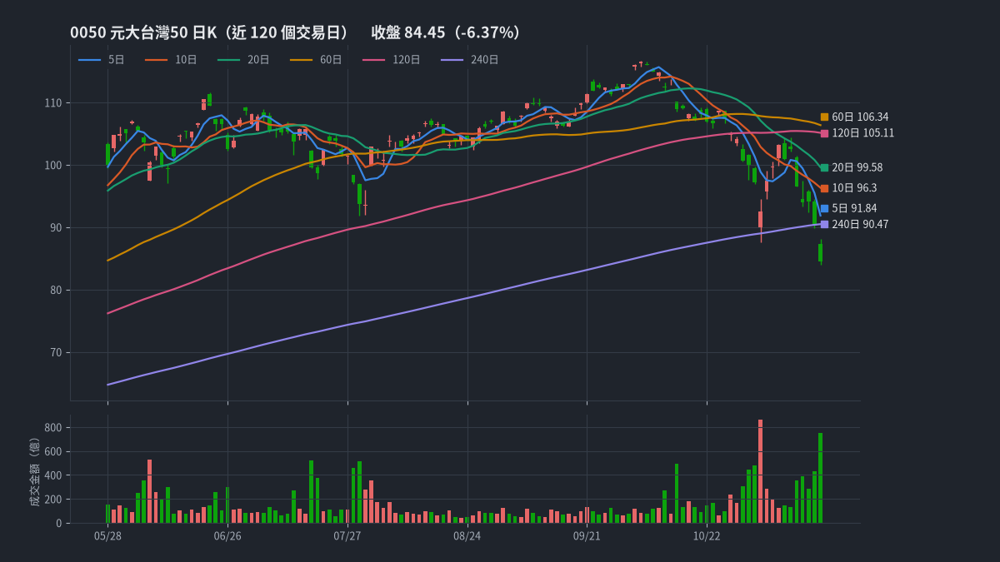
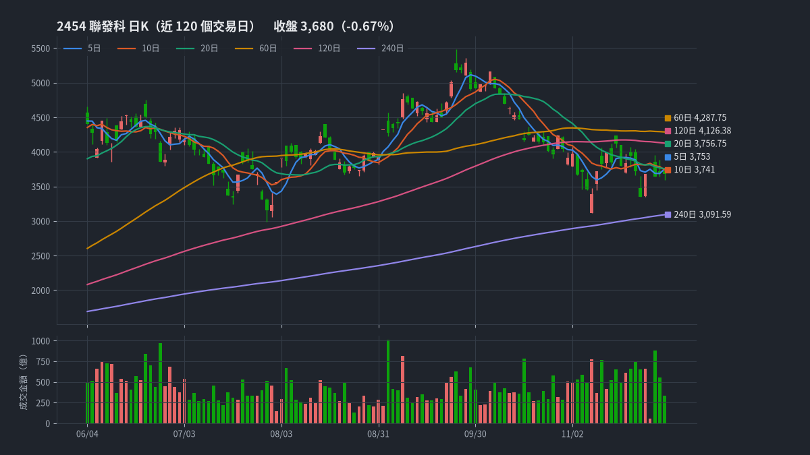
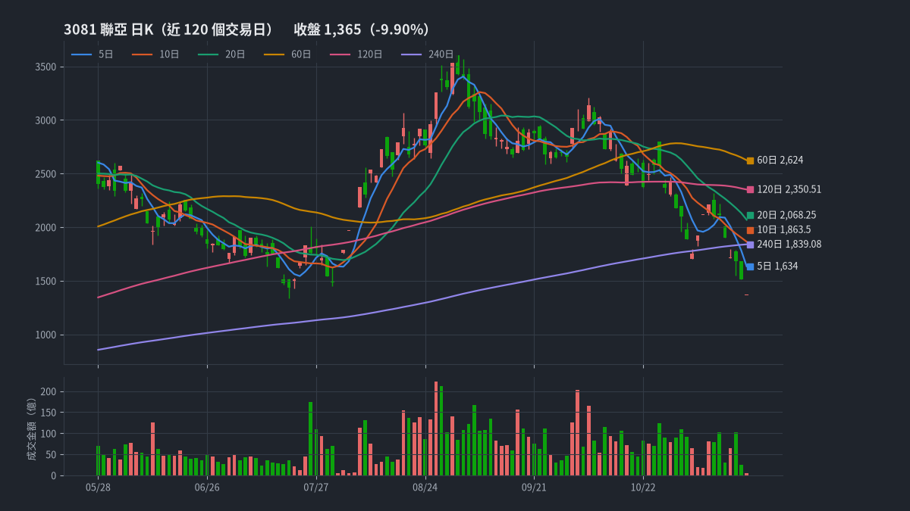
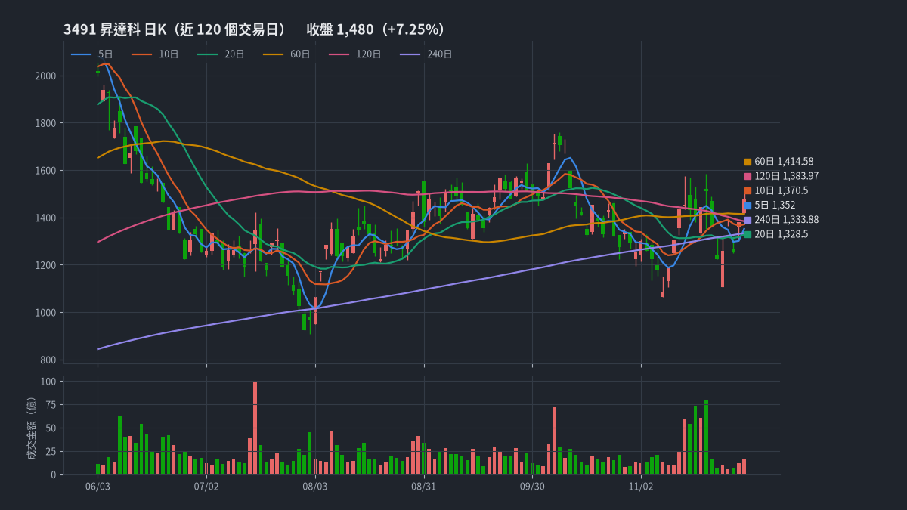
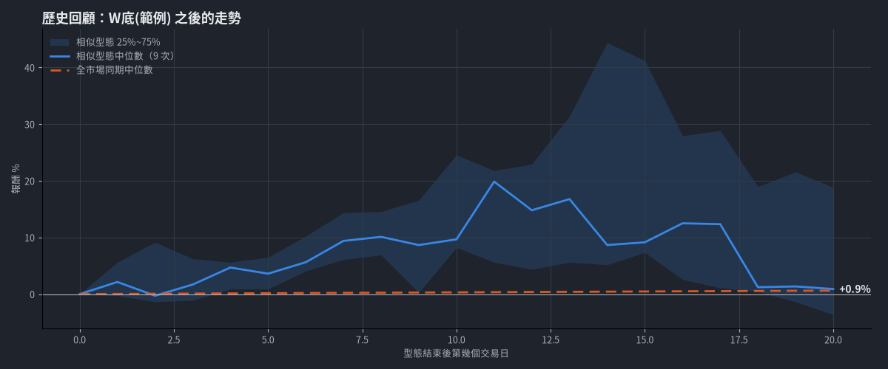

👀 個股追蹤 2026-11-27（五）
💤 今天（11/28）休市，以下是最近一個交易日的資料
| 代號 | 名稱 | 收盤 | 漲跌 | 量（倍） | 近20日 | 均線位置 | 支撐壓力 | 法人（張） | 符合 |
|---|---|---|---|---|---|---|---|---|---|
| 2330 | 台積電 | 2,180 | +1.63% | 0.8 | -8.0% | 在 5、10、240 日線之上，20、60、120 日線之下 | 到關鍵支撐：盤中回測 5日線（週線） 2,147，收盤守住 | -7,206 | 外資連續賣超 |
| 0050 | 元大台灣50 | 92.4 | -0.48% | 0.3 | -12.0% | 在 5、10、240 日線之上，20、60、120 日線之下 | 到關鍵支撐：盤中回測 5日線（週線） 91.65、10日線（雙週線） 91.75，收盤守住 | +10,870 | — |
| 2454 | 聯發科 | 3,680 | -0.67% | 0.6 | -6.0% | 在 240 日線之上，5、10、20、60、120 日線之下 | 跌破 5日線（週線） 3,753，下一個支撐是 240日線（年線） 3,091.59（距離 19.0%） | -353 | 外資連續賣超 |
| 3443 | 創意 | 5,090 | -5.57% | 0.4 | -33.3% | 在 240 日線之上，5、10、20、60、120 日線之下 | 跌破 5日線（週線） 5,260，下一個支撐是 240日線（年線） 4,432.41（距離 14.8%） | -44 | — |
| 3008 | 大立光 | 4,235 | -4.29% | 1.1 | -22.0% | 在 5、10、240 日線之上，20、60、120 日線之下 | 到關鍵支撐：盤中回測 10日線（雙週線） 4,164，收盤守住 | -2 | — |
| 3081 | 聯亞 | 1,395 | -9.71% | 0.3 | -41.1% | 在所有均線之下 | 跌破 5日線（週線） 1,455，下方已經沒有均線支撐 | -149 | — |
| 3491 | 昇達科 | 1,480 | +7.25% | 0.6 | +17.9% | 站在所有均線之上 | 站上 60日線（季線） 1,414.58、120日線（半年線） 1,383.97（由壓力轉為支撐） | +42 | — |
2330 台積電 2,180 ▲35（+1.63%）

日K：長紅K（開 2,145｜高 2,180｜低 2,135｜收 2,180）
量能：成交 42,505 張（921.6 億），是 20 日均量的 0.8 倍（量平）
漲跌：近5日 +9.0%｜近20日 -8.0%｜近60日 -9.7%｜距 60 日高點 -15.7%
法人：外資 -8,711｜投信 +912｜自營商 +592｜合計 -7,206 張（外資連賣 12 天、法人 5 日 -55,193 張）（11/27）
融資融券：融資 28,191（-1,076，使用率 0.4%）｜融券 42（+15）｜券資比 0.1%（11/27）
大戶：400 張以上大股東 86.9%，週增減 -0.06（11/20）
符合：外資連續賣超
📅 11/30（一） 法說會（23:55）
均線：在 5、10、240 日線之上，20、60、120 日線之下｜均線交錯
- 站上 10日線（雙週線） 2,139.5（由壓力轉為支撐）
- 到關鍵支撐：盤中回測 5日線（週線） 2,147，收盤守住
- 上方壓力：20日線（月線） 2,213（距離 1.5%）
| 均線 | 數值 | 收盤距離 | 方向 | 今天 |
|---|---|---|---|---|
| 5日線（週線） | 2,147 | +1.54% | ↗ 上揚 | 回測有撐（支撐） |
| 10日線（雙週線） | 2,139.5 | +1.89% | ↘ 下彎 | 站上（支撐） |
| 20日線（月線） | 2,213 | -1.49% | ↘ 下彎 | 在下方（壓力） |
| 60日線（季線） | 2,371.41 | -8.07% | ↘ 下彎 | 在下方（壓力） |
| 120日線（半年線） | 2,373.78 | -8.16% | ↘ 下彎 | 在下方（壓力） |
| 240日線（年線） | 2,118.26 | +2.91% | ↗ 上揚 | 在上方（支撐） |
0050 元大台灣50 92.4 ▼0.45（-0.48%）

日K：小黑K、長下影線（下檔有買盤）（開 92.8｜高 93｜低 91.6｜收 92.4）
量能：成交 111,386 張（102.9 億），是 20 日均量的 0.3 倍（量縮）
漲跌：近5日 +9.4%｜近20日 -12.0%｜近60日 -13.6%｜距 60 日高點 -20.7%
法人：外資 +11,484｜投信 +2,150｜自營商 -2,764｜合計 +10,870 張（外資連買 1 天、法人 5 日 -268,004 張）（11/27）
融資融券：融資 57,281（-1,728，使用率 0.9%）｜融券 485（-41）｜券資比 0.8%（11/27）
大戶：400 張以上大股東 23.1%，週增減 -0.83（11/20）
均線：在 5、10、240 日線之上，20、60、120 日線之下｜均線交錯
- 到關鍵支撐：盤中回測 5日線（週線） 91.65、10日線（雙週線） 91.75，收盤守住
- 上方壓力：20日線（月線） 95.77（距離 3.5%）
| 均線 | 數值 | 收盤距離 | 方向 | 今天 |
|---|---|---|---|---|
| 5日線（週線） | 91.65 | +0.82% | ↗ 上揚 | 回測有撐（支撐） |
| 10日線（雙週線） | 91.75 | +0.71% | ↘ 下彎 | 回測有撐（支撐） |
| 20日線（月線） | 95.77 | -3.52% | ↘ 下彎 | 在下方（壓力） |
| 60日線（季線） | 105.19 | -12.16% | ↘ 下彎 | 在下方（壓力） |
| 120日線（半年線） | 104.58 | -11.65% | ↘ 下彎 | 在下方（壓力） |
| 240日線（年線） | 91.13 | +1.40% | ↗ 上揚 | 在上方（支撐） |
2454 聯發科 3,680 ▼25（-0.67%）

日K：長黑K、開高走低、長下影線（下檔有買盤）（開 3,725｜高 3,740｜低 3,595｜收 3,680）
量能：成交 8,996 張（330.8 億），是 20 日均量的 0.6 倍（量縮）
漲跌：近5日 +9.9%｜近20日 -6.0%｜近60日 -7.7%｜距 60 日高點 -30.4%
法人：外資 -325｜投信 +34｜自營商 -62｜合計 -353 張（外資連賣 10 天、法人 5 日 -3,741 張）（11/27）
融資融券：融資 11,186（-374，使用率 2.8%）｜融券 29（-3）｜券資比 0.3%（11/27）
大戶：400 張以上大股東 71.2%，週增減 -0.15（11/20）
符合：外資連續賣超
均線：在 240 日線之上，5、10、20、60、120 日線之下｜均線交錯
- 跌破 5日線（週線） 3,753，下一個支撐是 240日線（年線） 3,091.59（距離 19.0%）
- 上方壓力：10日線（雙週線） 3,741（距離 1.6%）
| 均線 | 數值 | 收盤距離 | 方向 | 今天 |
|---|---|---|---|---|
| 5日線（週線） | 3,753 | -1.95% | ↗ 上揚 | 跌破（壓力） |
| 10日線（雙週線） | 3,741 | -1.63% | ↘ 下彎 | 在下方（壓力） |
| 20日線（月線） | 3,756.75 | -2.04% | ↘ 下彎 | 在下方（壓力） |
| 60日線（季線） | 4,287.75 | -14.17% | ↘ 下彎 | 在下方（壓力） |
| 120日線（半年線） | 4,126.38 | -10.82% | ↘ 下彎 | 在下方（壓力） |
| 240日線（年線） | 3,091.59 | +19.03% | ↗ 上揚 | 在上方（支撐） |
3443 創意 5,090 ▼300（-5.57%）

日K：長黑K、長下影線（下檔有買盤）（開 5,200｜高 5,320｜低 4,855｜收 5,090）
量能：成交 1,197 張（60.5 億），是 20 日均量的 0.4 倍（量縮）
漲跌：近5日 -5.7%｜近20日 -33.3%｜近60日 -15.4%｜距 60 日高點 -40.9%
法人：外資 -31｜投信 -54｜自營商 +40｜合計 -44 張（外資連賣 1 天、法人 5 日 +189 張）（11/27）
融資融券：融資 2,371（-53，使用率 7.1%）｜融券 105（+14）｜券資比 4.4%（11/27）
大戶：400 張以上大股東 63.8%，週增減 -0.97（11/20）
族群：IP
均線：在 240 日線之上，5、10、20、60、120 日線之下｜均線交錯
- 跌破 5日線（週線） 5,260，下一個支撐是 240日線（年線） 4,432.41（距離 14.8%）
- 上方壓力：5日線（週線） 5,260（距離 3.2%）
| 均線 | 數值 | 收盤距離 | 方向 | 今天 |
|---|---|---|---|---|
| 5日線（週線） | 5,260 | -3.23% | ↘ 下彎 | 跌破（壓力） |
| 10日線（雙週線） | 5,909 | -13.86% | ↘ 下彎 | 在下方（壓力） |
| 20日線（月線） | 6,556.25 | -22.36% | ↘ 下彎 | 在下方（壓力） |
| 60日線（季線） | 7,053.83 | -27.84% | ↘ 下彎 | 在下方（壓力） |
| 120日線（半年線） | 5,854.42 | -13.06% | ↗ 上揚 | 在下方（壓力） |
| 240日線（年線） | 4,432.41 | +14.84% | ↗ 上揚 | 在上方（支撐） |
3008 大立光 4,235 ▼190（-4.29%）

日K：長黑K（開 4,425｜高 4,465｜低 4,145｜收 4,235）
量能：成交 2,762 張（117.8 億），是 20 日均量的 1.1 倍（量平）
漲跌：近5日 +15.4%｜近20日 -22.0%｜近60日 -40.1%｜距 60 日高點 -45.8%
法人：外資 +76｜投信 -0｜自營商 -78｜合計 -2 張（外資連買 1 天、法人 5 日 -151 張）（11/27）
融資融券：融資 2,080（+72，使用率 6.4%）｜融券 52（-5）｜券資比 2.5%（11/27）
大戶：400 張以上大股東 53.3%，週增減 +0.18（11/20）
族群：光通
均線：在 5、10、240 日線之上，20、60、120 日線之下｜均線交錯
- 到關鍵支撐：盤中回測 10日線（雙週線） 4,164，收盤守住
- 上方壓力：20日線（月線） 4,588.5（距離 7.7%）
| 均線 | 數值 | 收盤距離 | 方向 | 今天 |
|---|---|---|---|---|
| 5日線（週線） | 4,057 | +4.39% | ↗ 上揚 | 在上方（支撐） |
| 10日線（雙週線） | 4,164 | +1.71% | ↘ 下彎 | 回測有撐（支撐） |
| 20日線（月線） | 4,588.5 | -7.70% | ↘ 下彎 | 在下方（壓力） |
| 60日線（季線） | 5,881.92 | -28.00% | ↘ 下彎 | 在下方（壓力） |
| 120日線（半年線） | 5,197.42 | -18.52% | ↗ 上揚 | 在下方（壓力） |
| 240日線（年線） | 3,836 | +10.40% | ↗ 上揚 | 在上方（支撐） |
3081 聯亞 1,395 ▼150（-9.71%）

日K：長黑K（開 1,530｜高 1,530｜低 1,395｜收 1,395）
量能：成交 887 張（12.7 億），是 20 日均量的 0.3 倍（量縮）
漲跌：近5日 +2.2%｜近20日 -41.1%｜近60日 -57.8%｜距 60 日高點 -60.5%
法人：外資 +44｜投信 -142｜自營商 -50｜合計 -149 張（外資連買 2 天、法人 5 日 +308 張）（11/27）
融資融券：融資 4,420（+49，使用率 17.4%）｜融券 139（-39）｜券資比 3.1%（11/27）
大戶：400 張以上大股東 43.8%，週增減 +0.17（11/20）
族群：光通
均線：在所有均線之下｜均線交錯
- 跌破 5日線（週線） 1,455，下方已經沒有均線支撐
- 上方壓力：5日線（週線） 1,455（距離 4.1%）
| 均線 | 數值 | 收盤距離 | 方向 | 今天 |
|---|---|---|---|---|
| 5日線（週線） | 1,455 | -4.12% | ↗ 上揚 | 跌破（壓力） |
| 10日線（雙週線） | 1,544.5 | -9.68% | ↘ 下彎 | 在下方（壓力） |
| 20日線（月線） | 1,812 | -23.01% | ↘ 下彎 | 在下方（壓力） |
| 60日線（季線） | 2,484.33 | -43.85% | ↘ 下彎 | 在下方（壓力） |
| 120日線（半年線） | 2,310.12 | -39.61% | ↘ 下彎 | 在下方（壓力） |
| 240日線（年線） | 1,859.88 | -25.00% | ↗ 上揚 | 在下方（壓力） |
3491 昇達科 1,480 ▲100（+7.25%）

日K：長紅K、跳空上漲（缺口 1,380～1,420）（開 1,420｜高 1,515｜低 1,420｜收 1,480）
量能：成交 1,110 張（16.5 億），是 20 日均量的 0.6 倍（量縮）
漲跌：近5日 +20.8%｜近20日 +17.9%｜近60日 -2.0%｜距 60 日高點 -13.7%
法人：外資 +13｜投信 +0｜自營商 +29｜合計 +42 張（外資連買 1 天、法人 5 日 -36 張）（11/27）
融資融券：融資 2,721（+133，使用率 15.8%）｜融券 69（+15）｜券資比 2.5%（11/27）
大戶：400 張以上大股東 37.2%，週增減 -0.46（11/20）
族群：網通
均線：站在所有均線之上｜均線交錯
- 站上 60日線（季線） 1,414.58、120日線（半年線） 1,383.97（由壓力轉為支撐）
- 還沒到支撐：最近的支撐是 60日線（季線） 1,414.58（距離 4.6%）
- 上方沒有均線壓力（在所有均線之上）
| 均線 | 數值 | 收盤距離 | 方向 | 今天 |
|---|---|---|---|---|
| 5日線（週線） | 1,352 | +9.47% | ↗ 上揚 | 在上方（支撐） |
| 10日線（雙週線） | 1,370.5 | +7.99% | ↗ 上揚 | 在上方（支撐） |
| 20日線（月線） | 1,328.5 | +11.40% | ↗ 上揚 | 在上方（支撐） |
| 60日線（季線） | 1,414.58 | +4.62% | ↘ 下彎 | 站上（支撐） |
| 120日線（半年線） | 1,383.97 | +6.94% | ↘ 下彎 | 站上（支撐） |
| 240日線（年線） | 1,333.88 | +10.95% | ↗ 上揚 | 在上方（支撐） |
🔍 型態掃描
W底(範例)（40 天）
目前沒有相似度 ≥85% 的股票
歷史相似型態 9 次，樣本少：5天 平均+4.4%／上漲89%、10天 平均+14.7%／上漲89%、20天 平均+9.3%／上漲56%｜全市場同期 20天 平均+3.9%／上漲52%
說明
- 均線、支撐壓力的判斷和盤勢解析相同（config「盤勢解析」的均線與門檻）；均線和漲跌用還原股價，收盤價是實際價格。
- 量能：今天成交量和前 20 日均量比較，1.5 倍以上是量增、0.7 倍以下是量縮。
- 融資融券每天晚上 9:30 才公布，傍晚的報告是前一個交易日的；大戶是集保每週五更新的 400 張以上大股東比例。
- 「符合」是 config「選股」裡今天成立的條件組（含 K 線型態）。
※ 依固定規則整理的盤後資料，僅供參考，不構成投資建議
